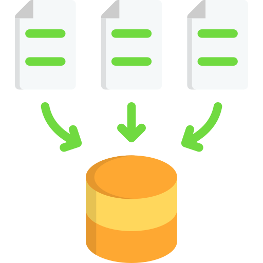

PROJECTS
Featured Work
Several data analysis and machine learning projects that I have built,ranging from data cleaning,
exploratory data analysis (EDA), visualization, to predictive modeling — all aimed at solving real-world problems.
E-Customer Segmentation and Classification
Machine learning project for bank transaction analysis, customer segmentation, and customer classification using data preprocessing, feature engineering, and predictive modeling.

CIFAR-10 Image Classification with Deep CNN
Deep learning-based image classification project developed using TensorFlow and Keras, including data preprocessing, model training, and evaluation.

Sentiment Analysis of 12,000 Free Fire Reviews Using Machine Learning & Deep Learning
Sentiment analysis system that classifies text into positive, negative, or neutral sentiments using natural language processing and machine learning.

End-to-End Machine Learning Pipeline for Telco Customer Churn Prediction
End-to-end machine learning pipeline for predicting telecom customer churn, including data preprocessing, feature engineering, model training, and model evaluation.

Dashboard Claim Asuransi
Interactive Tableau dashboard for analyzing insurance claim data through key metrics, trends, and visual insights.
Chatbot JDIH
AI-powered legal document chatbot using Retrieval-Augmented Generation (RAG) to answer questions based on Indonesian legal documents.
E-Commerce
Interactive E-Commerce data analysis dashboard covering data wrangling, EDA, and SMART business insights built with Streamlit.
HR Analytics: Employee Attrition Prediction & Dashboard
Interactive HR analytics dashboard built with Metabase to monitor employee attrition, workforce trends, and key business insights.
Student Dropout Prediction System
Student performance analytics and dropout prediction system combining business intelligence dashboards with machine learning.
Customer Segmentation & Churn Analysis Dashboard
Customer analytics project using RFM segmentation and churn analysis to identify customer behavior, retention opportunities, and business insights through interactive dashboards.
EXPERIENCE
Professional Experience
My professional experiences through internships, training programs, and academic activities in Data Science, Artificial Intelligence, Machine Learning, and Software Development.
Data Scientist Intern (IDCamp)
IDCamp Indosat Ooredoo Hutchison
Conducted employee attrition analysis, performed data preprocessing, exploratory data analysis (EDA), developed interactive dashboards using Streamlit and Metabase, and delivered data-driven recommendations to improve employee retention.
Microsoft Excel Basic to Advanced Bootcamp
MySkill Intensive Bootcamp
Completed an intensive Microsoft Excel Bootcamp covering data cleaning, formulas and functions, Pivot Tables, dashboard reporting, data validation, VBA macros, and data visualization. Applied Excel for business reporting, data analysis, and automation through practical exercises and a final project.
Machine Learning Engineer Intern
Accenture ASAH led by Dicoding
Developed an end-to-end customer analytics solution by performing data preprocessing, RFM customer segmentation, churn prediction modeling, and interactive dashboard development. Generated business insights and strategic recommendations to support customer retention and data-driven decision making in the retail sector.
Teaching Assistant
Universitas Ahmad Dahlan
Assisted Computer Graphics and Algorithm Strategy laboratory courses by mentoring approximately 40 students in C++ programming. Guided practical sessions, explained core programming and algorithm concepts, assisted with debugging, evaluated assignments, and supported students in developing problem-solving and programming skills.
Full-Stack Developer Trainee
Coding Camp powered by DBS Foundation (Dicoding × DBS Foundation)
Completed an intensive Full-Stack Web Development training program focused on modern front-end and back-end technologies. Developed Budget Ease, a personal finance management web application featuring responsive user interfaces, RESTful APIs, authentication, and data management using React, Node.js, Express.js, and SQL-based databases.
SERVICES
Our Features & Services
Business Understanding
Understanding business objectives, defining analytical problems, and identifying key performance indicators (KPIs) before starting the analysis.

Data Collection
Gathering structured and unstructured data from databases, spreadsheets, APIs, or other relevant business sources.

Data Cleaning & Preparation
Cleaning, transforming, handling missing values, removing duplicates, and preparing high-quality datasets for reliable analysis.

Exploratory Data Analysis (EDA)
Exploring data using statistical analysis and visualization to discover trends, patterns, correlations, and anomalies.

Dashboard & Visualization
Designing interactive dashboards and visual reports using Tableau, Power BI, Streamlit, or Metabase for better business monitoring.
Predictive Analytics
Building machine learning models for classification, regression, clustering, customer segmentation, and churn prediction when required.
Business Insights
Translating analytical findings into meaningful insights that highlight opportunities, risks, and key business performance factors.
Data-Driven Recommendations
Delivering clear recommendations and actionable strategies to support informed business decisions and continuous improvement.
CONTACT